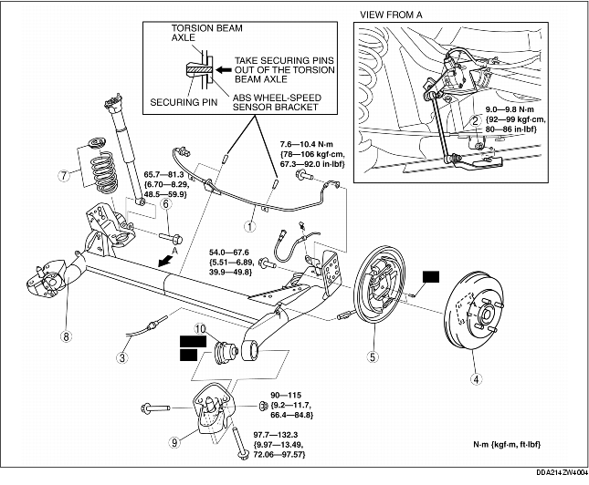

1. Remove in the order indicated in the table.
2. Install in the reverse order of removal.

.
|
1
|
ABS wheel-speed sensor
|
|
2
|
Nut (Auto levering sensor lower side)
(Vehicle with auto levering sensor)
|
|
3
|
Parking brake cable
|
|
4
|
Brake drum component
|
|
5
|
Backing plate
(See Back Plate Removal Note)
|
|
6
|
Bolt (shock absorber lower side)
|
|
7
|
Spring component
|
|
8
|
Torsion beam axle component
|
|
9
|
Bracket
|
|
10
|
Bushing
(See Bushing Removal Note)
|
1. Disconnect the part of parking cable indicated in the figure.
2. Pull the parking brake cable as shown in the figure, and remove it from the torsion beam axle.
1. Remove the back plate component from the torsion beam axle, then suspend it using a cable.
1. Support the torsion beam using a jack.
2. Remove the bolt.
1. Make a mark on the torsion beam axle in alignment with the ridge of the bushing rubber (section A in the figure).
2. Remove the bushing using the SSTs.
3. Verify that the inside of where the torsion beam axle bushing is press-fit is free of dirt or grime. If there is dirt or grime, clean the part.
1. Set the bushing rubber with the ridge (section A in the figure) aligned with the mark made upon removal.
2. install the bushing using the SSTs.